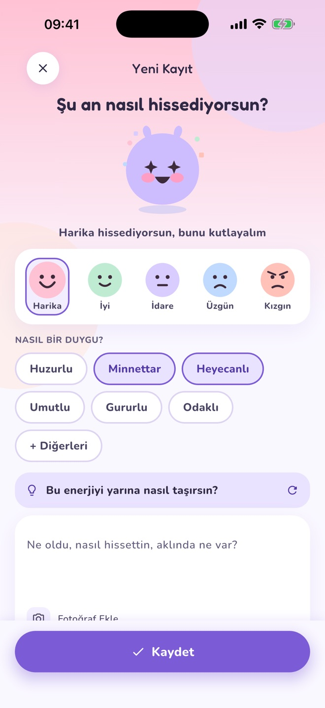
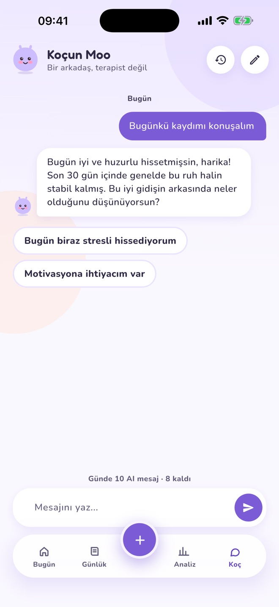

1
Bir yüze dokun
Beş ruh halinden birini seç. İstersen not, fotoğraf ya da etiket ekle.

 iPhone için ruh hali günlüğü
iPhone için ruh hali günlüğü
Bir yüze dokun, kaydet. Moodora zamanla sana neyin iyi geldiğini, neyin yorduğunu ve günün en zor saatlerini gösterir.
Sen kaydet; desenlerin zamanla kendiliğinden ortaya çıksın.
Beş ruh halinden birini seç. İstersen not, fotoğraf ya da etiket ekle.

Haftalık ritmin, en zor saatlerin ve sana iyi gelen şeyler kayıtlarından ortaya çıkar.
Koçun Moo gününü dinler; kısa bir içgörü ve yapılabilir küçük adımlar önerir.

Moodora kayıtlarındaki saatlere, günlere ve aktivitelere bakar. Pazartesileri mi zorlanıyorsun, yürüyüşten sonra mı açılıyorsun? Hepsi tek ekranda.

Moodora seni zorlamaz; her gün seni biraz daha tanır.
Her hafta kısa bir özet: en iyi günün, iniş çıkışların ve yeni hafta için küçük hedefler.
Kendi rutinini kur: günleri seç, hatırlatma saati ekle, serini takip et.
Bir arkadaşınla birbirinizi motive edin, birlikte ortak rutin kurun.
Zor anlarda Moo'yla nefes egzersizleri ve kısa rehberler.
Ana ekrandaki widget'tan ya da bildirimden tek dokunuşla kayıt.
Seri, puan ve kutlama olmadan sade bir günlük.

Evet, indirmek ve kullanmak ücretsiz. Premium; tüm geçmişini, derin analizleri, haftalık koçluk seansını ve renk temalarını açar. Yeni aboneler 7 gün ücretsiz deneyebilir.
Hayır. Adını yazman yeter; e-posta ya da şifre istemeyiz.
Hayır. Moo destekleyici bir yol arkadaşı; terapi ya da sağlık hizmeti değildir. Moodora profesyonel desteğin yerini almaz.
Şimdilik yalnızca iPhone için.
Türkçe, İngilizce, Almanca, Fransızca, İspanyolca, Portekizce, Felemenkçe, İsveççe, Japonca ve Korece.